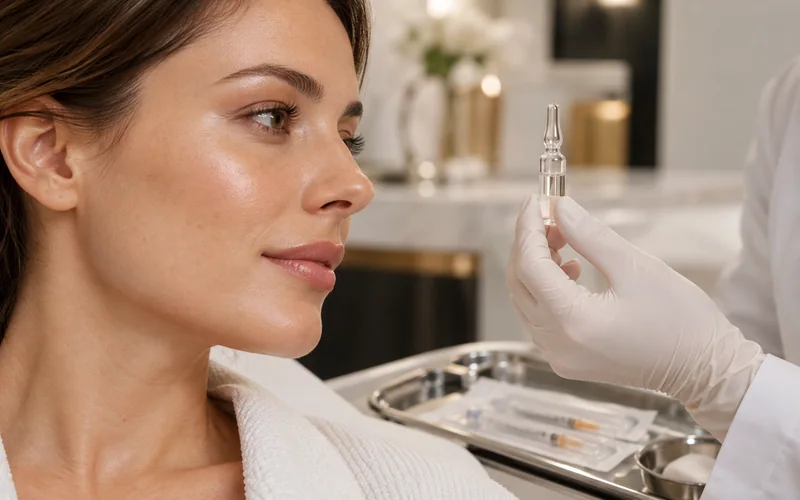

Skinbooster / PDRN
em Águas Claras.
Leve suas dúvidas sobre skinbooster e PDRN para a avaliação individual.
Atendimento na Sthetic Center, no LED Office, com avaliação individual e acompanhamento.
Agendar pelo WhatsApp
Entenda a proposta de cuidado para sua pele
Skinbooster e PDRN são termos que aparecem nas buscas por qualidade e cuidado da pele, mas não devem ser tratados automaticamente como um único protocolo. Na avaliação, esclareça qual proposta está sendo considerada, qual produto faz parte dela e como isso se relaciona com o seu objetivo.
No atendimento facial da Sthetic Center, em Águas Claras, sua rotina de skincare e os procedimentos anteriores entram na conversa. Pergunte sobre características do plano, cuidados e acompanhamento. Assim, você conhece o atendimento antes de decidir e consegue organizar os próximos passos com a profissional.
Seu atendimento acontece em Águas Claras, no LED Office. Use o contato desta página para falar sobre skinbooster / pdrn e consultar os próximos horários da Sthetic Center.
Consultar perguntas frequentesUma avaliação
pensada para você.
O foco da conversa sobre skinbooster / pdrn é qualidade e cuidado da pele. A profissional responsável avalia seu caso, conversa sobre suas expectativas e esclarece as possibilidades do atendimento.
O que conversar na avaliação
- Sua rotina de cuidado facial
- Dúvidas sobre skinbooster e PDRN
- Possibilidades para o seu caso
A indicação depende da avaliação individual. Converse sobre cuidados, limitações e expectativas antes de decidir. Resultados e evolução variam de pessoa para pessoa.
Do primeiro contato
ao seu plano de cuidado.
- Converse pelo WhatsApp
O botão já abre uma mensagem sobre skinbooster / pdrn. Conte suas dúvidas diretamente à equipe.
- Organize sua avaliação
Consulte horários, valores e condições do atendimento. A equipe confirma a disponibilidade com você.
- Defina os próximos passos
Na avaliação, conheça o planejamento e as orientações adequadas ao seu caso.
Seu atendimento
em Águas Claras.
QS 1, Rua 210, lotes 34 e 36Bloco E, loja 26 · LED Office
Águas Claras, Brasília — DF
Segunda a sexta: 9h às 19h
Sábado: 9h às 12h
Atendimento mediante agendamento. Confirme horários em feriados.
Vamos conversar sobre
skinbooster / pdrn?
Tire suas dúvidas e organize sua avaliação com a equipe.
Falar pelo WhatsApp(61) 99611-3976
Dúvidas sobre
Skinbooster / PDRN.
Informações sobre o serviço e seu atendimento em Águas Claras, no LED Office.
Skinbooster e PDRN são exatamente o mesmo procedimento?
São termos distintos. A profissional explica a proposta disponível e as diferenças pertinentes ao seu objetivo. Confirme o produto e as etapas que fazem parte do atendimento.
Posso conversar sobre hidratação e viço da pele?
Sim. Conte como percebe sua pele, quais produtos utiliza e o que gostaria de cuidar. A avaliação serve para discutir esses objetivos e as possibilidades apropriadas.
É possível combinar com outros cuidados faciais?
Leve informações sobre procedimentos recentes ou planejados. A profissional avalia se há combinação pertinente e orienta a organização do atendimento, sem associações automáticas.
Onde encontrar skinbooster / pdrn em Águas Claras?
A Sthetic Center atende no LED Office: QS 1, Rua 210, lotes 34 e 36, bloco E, loja 26, Águas Claras, Brasília — DF. Os atendimentos são agendados com a equipe pelo WhatsApp (61) 99611-3976.
Quem atende essa área na Sthetic Center?
A área conta com Dra. Josy Araújo, biomédica e responsável técnica, CRBM 21978/DF. Ao fazer contato, informe seu interesse em skinbooster / pdrn e confirme a disponibilidade para avaliação.
Qual é o valor de skinbooster / pdrn?
Consulte a equipe pelo WhatsApp para saber os valores e as condições de pagamento. Confirme o que está incluído na proposta; o planejamento e eventuais sessões são esclarecidos conforme a avaliação.
Como agendar e quais são os horários da clínica?
Use o botão de WhatsApp desta página para iniciar uma conversa sobre skinbooster / pdrn. A clínica atende de segunda a sexta, das 9h às 19h, e sábado, das 9h às 12h. A equipe confirma a data e o horário; consulte disponibilidade em feriados.